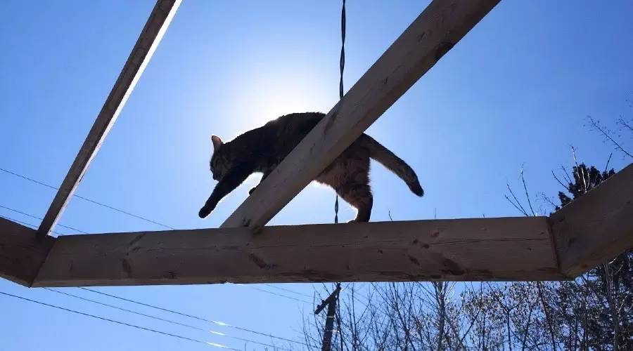
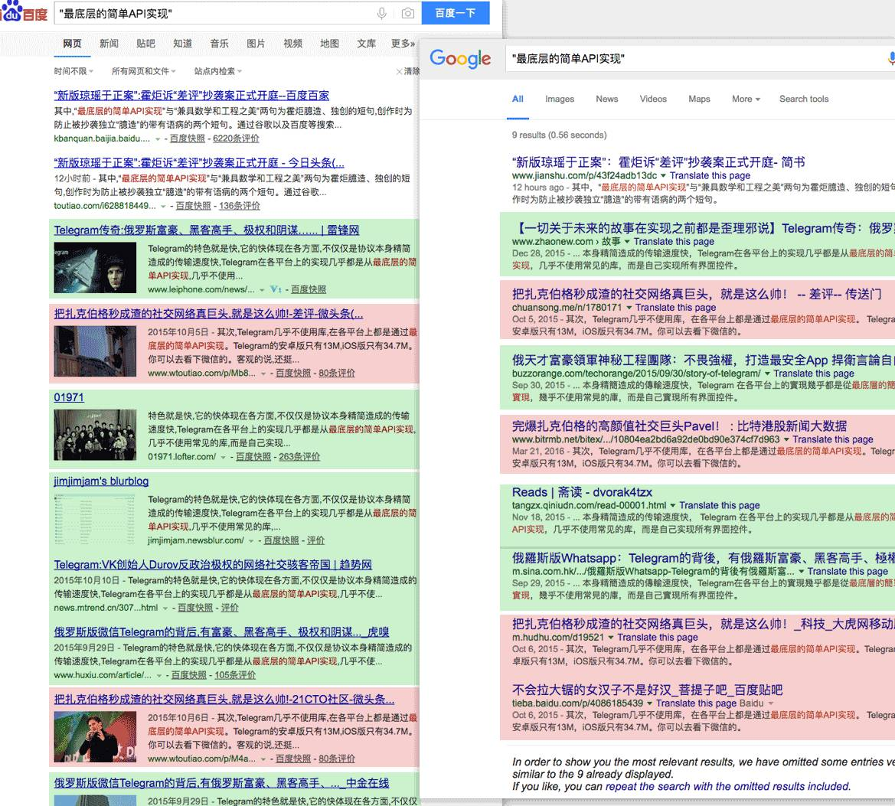
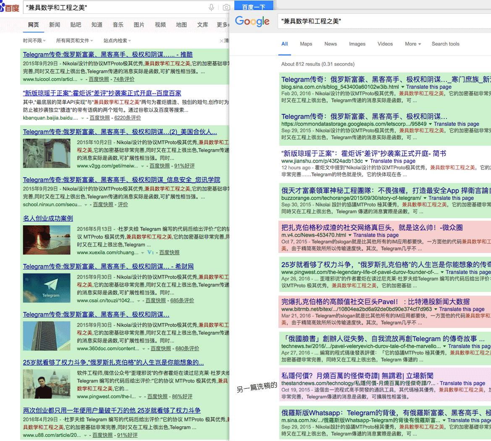

和程序员打官司是一种怎样的体验
Contents

前述起诉杭州麻瓜网络科技有限公司（公众号“差评“运营方）疑似抄袭案5月23日在杭州第一次开庭审理结束，当场未能作出判决，审判长宣布择日开庭再申。需要再次开庭也说明了这个案件有一定复杂性，可见我之前说的没错，这是一个有趣的案子。
第一次开庭审理完成，该公开的东西也基本都公开了。我就可以来说说为什么要打这场官司，以及在这场公司里面我们有什么样的创新了，因为这些创新，它成了一个值得原创作者、媒体人、法律届和计算机技术行业共同关注的案子。
很多人好奇打这个官司的目的是什么。通常看到索赔标的1块钱的案子，大家都明白，它的目的一定不是赔偿本身。据说被告方项目的投资人在朋友圈破口大骂，说我是炒作。看到这种奇怪的事情只能想到炒作这一个目的，这恐怕是个境界问题。
对于这个案子，我真正的目的是“测试”。这是非常工程师的思路，做为工程师，如果我们发明了一种办法，一定会实施它，并且在现实中验证它的可行性。而我需要验证的这个方法，只能在法庭上验证，于是就有了本案。
在法庭上，我方律师询问被告方，在创作被告涉案文章之前，是否阅读过原告文章（也就是我写的Telegram那篇文章）。被告表示“没看过，是之后才看过的”。之后我方律师出示了一份证据，这份证明表明了在原告文章和被告文章中，都出现了两个短句：
- “兼具数学和工程之美”
- “最底层的简单API实现”
这两个短句看起来很普通，但如果用搜索引擎分别搜索这两个短句，无论是Google还是百度，都会发现使用过这两个短句中任何一个的文章都只有两篇（在本案立案时），分别是我原始的文章和被告的涉案文章，以及各种对这两篇文章的转载。公众号的发表时间可以证明，我的文章在前，他们的文章在后。这充分证明了两者是有关联的，并非被告律师所说的“独立创作”。被告律师在几分钟之前在法庭上表示的“没看过”，也就不成立了。

图：两文对比。他们说之前没看过我的文章显然是撒谎。
我是如何做到这件事的？这其实就是我想通过本案验证的东西。我还没给它正式命名，估计“文字标记”或者“文字信标”之类的名字会比较符合它的含义。 这个办法的具体做法如下：
- 在符合中文语法的情况下，通过改变词语搭配，使用同义词和形容词的组合和堆叠，来创造一个历史上没被人使用过的短句。
- 在一篇创作完成的文章中，寻找一些合适的句子，用这样独一无二的短句替换它。
- 间隔一段文字就进行一次这种替换。让独一无二的短句在文章中达到一定密度。
具体用本案的证据为例，如果说“底层API实现”，用搜索引擎一搜，可以搜到很多文章用过。于是我变换了这个句子，变成“最底层的简单API实现”。其中形容词“最“和形容词”简单“都是多余的，但是加上它们之后，就变成了之前没人用过的句子，并且仍然符合中文语法，也不会破坏本来要表达的意思。于是我们就通过堆叠形容词，得到了独一无二的短句“最底层的简单API实现”。另外一个例子也一样，如果写“数学和科学之美”，这就是一个常用的短句，把“科学”换成“工程”，就变成了独一无二的了。我还可以继续修改它，比如“精致的数学和工程之美”，或者“精致的数学和复杂的工程之美”…总之，总是可以通过这种堆叠和替换找到一个合适的短句。
为什么要这样做？因为知识产权案件中”独立创作“本身是案件的关键因素。我国著名法学家程荣斌先生所著的《知识产权法: 案例・法规・试题》一书中有以下论述：“独立创作着眼于从创作过程考察作品…指作者独立于其他作品创作，即在创作过程中没有抄袭或复制其他作品的行为。”。可见，证明对方有实际直接的抄袭行为就是关键。当我做为原始作者把这样独一无二的短句放在原文之中，如果抄袭方抄走这样的短句，放在了他的新文章中。这就是对方抄袭而非“独立创作“的直接证据。可以很容易证明两篇文章是有关联的。从而推翻关于“独立创作”的辩护，推翻这一点之后，其他的证据组合就可以发挥更大的效果，巧合就不再是简单的巧合。这两个短句很小，但它们就像两根钉子，钉住了对方。
资深媒体人们（比如被告公司）所擅长的“洗稿“手法，也恰好是利用著作权法的这种解释。他们通常自我辩护“我们是通过一样的公开材料创作的作品”。虽然是雷同的作品，在司法上不一定能就此认定他们是抄袭。有了我的“文字信标”之后，事情恐怕就会有一些改变了。
以上解释有一点罗嗦，用一个不太恰当的类比，它就像你知道别人要抄你的试卷，于是你故意在卷子里面写几个错字，等着对方连同错字一起抄走。 微信的原创保护是一种被动防御手段，我这个办法算是主动防御。
被告方显然是熟练应用洗稿这门艺术，除了我之外，还有不少原创作者跟我吐槽过被他们通过用洗稿的办法抄袭。在微信的体系里面，这种办法确实可以逃过微信原创系统的检测，但想逃过我这个标记难度就大了很多。的确，我们永远不可能断绝抄袭行为， 别说写文章，就算学术论文的抄袭检测已经严格到今天这种地步后果又非常严重，每年仍然有大量的人以身试法，更别说写一篇文章了。不过我们仍然可以通过一些办法，大大增加抄袭成本。微信的原创保护是通过技术方法前进了一大步，我这种办法也是一样，同样是使用技术方法把这件事往前推动一步，增加抄袭成本，双方的斗争会一直持续下去。
为什么会想出这个办法？我多年从事搜索引擎相关工作，基本就是跟文字、分词、文本相似、文字指纹、ranking这些东西打交道。这是一脉相承的技术思路，既然我们可以判断文本相似性完成搜索，一样可以通过搭配来创造唯一的句子。创建这种独一无二的句子通过“程序+人工”的方式，成本是很低的。但对于抄袭方，找出来这些句子成本就高了很多。因为它完全符合语法，只改动搭配和形容词，语法检测也很难找到它们（何况中文本来就是弱语法的，我们每天都在创造无数的病句）。如果通过此案证明了这种方法可以被法院认可，那么就可以推广它，从而为原创作者和知识产权领域做一点点贡献。
这也是一个很好的法律和计算机技术跨界合作的案例。非常感谢我的律师严飞先生，他非常专业，我第一次给他讲解这个方法的时候，他立刻就明白了，当即问我：“是不是就像程序员会在代码里面故意加一些无用的错误代码，以证明代码是自己写的”。非常准确，程序员们使用这个技巧已经有几十年的历史了，我们一直通过在代码中植入特殊的跳转、特殊的数字之类的东西来创造代码的唯一性，并做为签名，在软件方面的知识产权诉讼中，出现过这种案例，但应用到文字创作上，我觉得这应该是第一个公开的案例。


图：Google和百度搜索结果（注意搜索时候加引号）。非常壮观，绿色的是我的原文，红色的是被告文。今天搜索结果页面已经和当初取证时候不一样了，又多了关于此案的报道，并且还顺便抓到了另外一个洗稿的（时间仍然在被告之后），但要证明的事情还是很明显。这个结果也显示了，用这种办法轻松找到所有的转载，很方便。
严飞律师还准备了另外几份证据，包括两篇文章所选取的资料完全几乎一致，他把文章分解成19个片段，每个片段对应一个事件，两篇文章在拆分之后，在119处中有18处是重合的。另外还有关于叙述方式对比文章中描述事件的时间线，两篇文章使用正叙，倒叙，插叙的顺序完全一致。再加上前面这两个短句证明了对方直接抄袭。是一组很不错的证据。
庭审过程中还有一些亮点，比如被告方律师在前面一个多小时的时间里始终力图证明“霍炬不是霍炬”，即委托人霍炬不一定是公众帐号文章的署名者“霍炬”，以试图直接推翻案件。这是利用了微信不给个人帐号做认证的漏洞，虽然我是拿身份证实名注册的公众号，但是微信没有一个界面可以提供这种身份查询。不过本案法官相当机智，当场让我方律师询问我的公众号用户名密码，法官在法院计算机上亲自登录公众帐号，查找历史文章，找到了我发表过那篇Telegram文章。之后被告方律师仍然试图推翻这种联系，法官则表示“法庭已经查明…[法官陈述了登录和查找文章过程]…可以认定霍炬即是原告文章作者”。如果以后还有人想进行类似的诉讼，要记住证明这一点。其实就算是我本人亲自出庭，对方律师还是会利用这个漏洞的，恐怕还是要当场走一遍这个流程才能证明。也许在准备证据的时候请公证处公证一下公众号登录和查找过程更为简单？微信也许将来也能为我们这些未认证帐号提供一个更直接的证明方式，毕竟是拿身份证注册的，微信在系统中提供一下关联关系并不困难。虽然理论上可以委托法院到腾讯公司调取证据，但这无形中增加了法院的司法成本，没什么必要，还是能自己解决最好。
最后法官问我方律师：“严飞，你怎么找到这种案子的？” 律师回答“因为有趣…”
是的，我说了好几次，这是一个非常有趣的案子。我等这个案子已经等了很久，从我开这个公众号的第一天，就在使用这种办法为我的文章植入独一无二的“文字信标”。当然，这么做并不仅仅是为了诉讼，它还能帮助我寻找文章扩散的范围，我只要去搜索引擎上搜这些短句，就能找到所有转载我文章的地方，不会有冗余信息干扰。这样我可以很容易去各论坛阅读我文章被转载后的评论。很多朋友之前也好奇过，为什么我总能找到转载我文章的地方，无论多小多隐蔽都能找到，这就是我的秘密武器。
但在司法上到底如何认定，靠我自己臆测和推断是不行的，必须要经过一次审判过程才能验证它。但偏偏这个时代人们都比较喜欢大事化小、小事化了，好几次我公开指责抄袭我文章的人，对方都是立刻道歉或者找中间人帮助和解，遇到这种情况，我也不好板着脸追下去。直到等到了这位资深媒体人徐建军先生（此处直接写出姓名未侵犯徐先生权利，因为这是从杭州工商信息公开查询到信息）、以及后来变更之后的新法人代表陶伟华先生（此处直接写出姓名未侵犯陶先生权利，因为他是此案被告法定代表人）。他们拒不承认抄袭行为存在，甚至还在差评公众号上写了一篇文章指责我碰瓷。想必是他们熟知媒体运作，也知道这种诉讼成本很高、难度很大，有恃无恐。但他们并不知道技术上可以有这样的思路，也不知道已经吃了我埋的饵。他们曾经认为我是“装大度，装不生气”，相信现在他们明白了，我不仅不生气，还很高兴，甚至可以用狂喜来形容，因为终于有人配合我做这个测试了。衷心感谢二位的配合，不然我还得继续等待下去。
亦有其他做媒体的朋友告诉我“传统媒体人对这些事情看的比较轻，不觉得这样算错误“。这我也能理解，毕竟中文创作市场已经不规范了那么多年，如果没有微信的原创保护，今天个人创作者仍然是极度弱势。不过，因为技术的加入，事情逐渐开始变的不一样了。我在《无限只猴子》那篇文章中提到过 “微信团队做为媒体行业的外行人努力维护这个行业，但同时内行人们用自己的知识和技巧从内部继续挖垮它”。今天我要改一下这句话，应该说“尽管如此，更多的工程师、另外一些媒体人以及法律人们，正在一起维护这个行业，并且改变它”。
至于本案结果，它反而不那么重要。如果最终结果证明这个办法有效，我会推广它。如果无效，我会继续寻求法律人士的帮助，完善它，然后再试一次。我并不是一个狂热的知识产权拥护者，我创造了大量采用MIT/BSD这种宽松许可证的东西，但是对于目前这种完全不尊重原作者的“行业惯例”，还是希望能做点事情改变它。
顺便说一句，工程师们正在改变很多东西。无论是前一段“魏则西事件”之后，工程师们在GitHub上建立的“医院开放数据“项目还是本案，工程师们使用的工具、方法论和思路，都已经突破了虚拟世界的边界，开始影响现实世界。工程师们在虚拟世界中面对的问题相当复杂，于是发了了各种工具和方法论，当这些东西开始用来解决现实世界的问题时，就会产生一些前所未有的效果。在这个过程中，需要各种其他专业人士一起努力才能有比较好的效果。未来这样的事情还会更多，一起期待吧。
最后，再次感谢快版权、浙江秉格律师事务所，感谢严飞律师和他专业的团队，感谢当初为了此案联系我的Vivian Huang，感谢去庭审现场围观，帮我转述庭审过程的“追风筝的人”。我在之前“快播案”的文章中提到过，我是一个业余法律爱好者，是各位的帮助，让我这个业余法律爱好者的胡思乱想，终于走到了被检验的这一步。谢谢你们！
“喵雷格喵”写了一篇文章，更详细的记录了庭审过程。更关心细节的朋友，可以点这里去读她的文章。
参考备注：
- 标题图：在deck顶上跳跃的推特，西乔拍摄。推特是本公众号头像中的这只猫，出生于上海张江。推特是极好的猎手，为了捉一只老鼠能趴在一处十多个小时一动不动，直到最后跳起捕猎。
- 前情提要：不需要无限只猴子的创新抄袭 这篇文章讲述了我如何找到被告的真实身份
- 原始文章：Telegram传奇：俄罗斯富豪、黑客高手、极权和阴谋…
- 做为法律爱好者，我写的快播案文章：快播案：程序正义、盗版和色情
Author Huo Ju
LastMod 2016-05-27